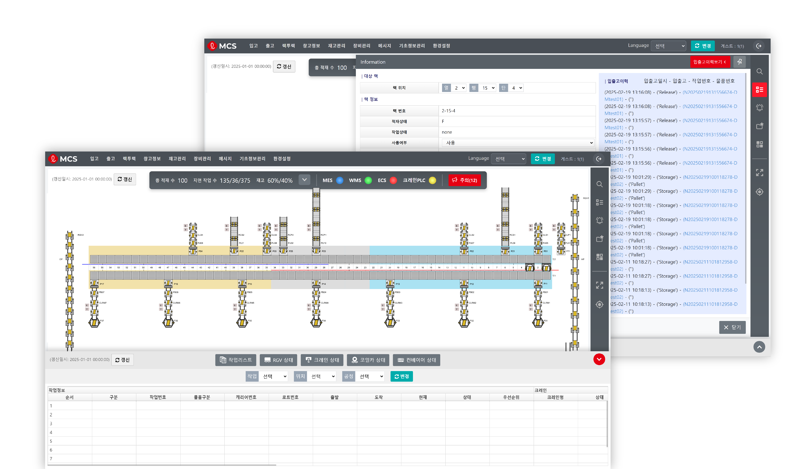
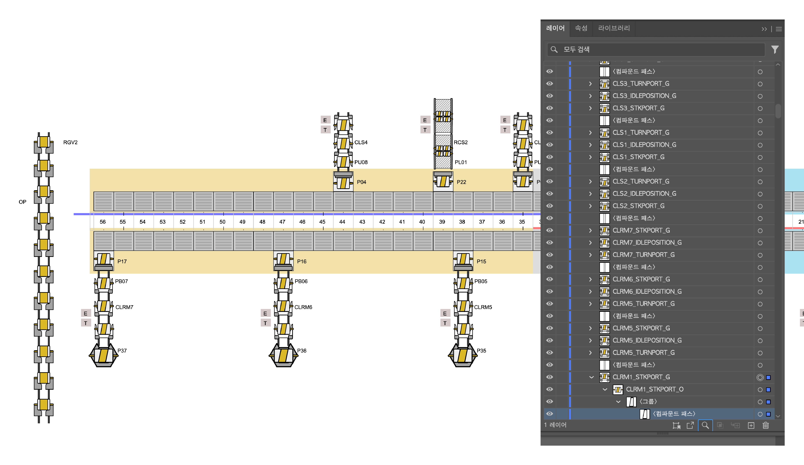
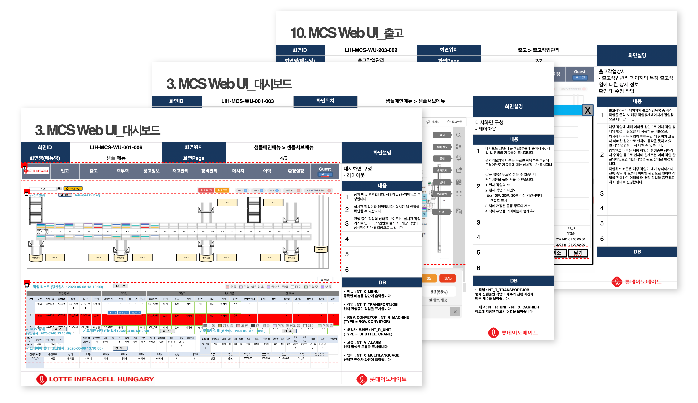
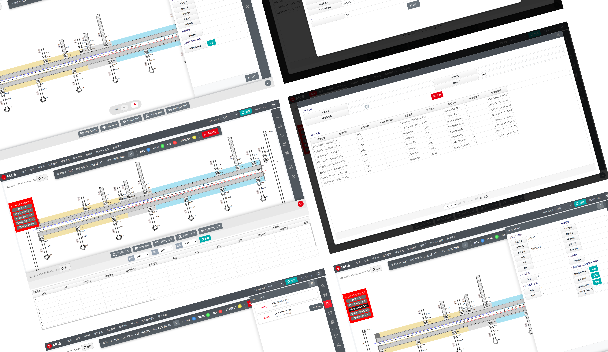

MCS(Material Control System)
롯데인프라셀 파견 프로젝트

Project Overview
롯데인프라셀의 MCS 환경에 맞춰 UI 흐름을 재설계하고, SVG 기반 설비 시각화와 퍼블리싱 적용을 일관되게 진행했습니다. 요구사항 정리–제안–적용까지 한 트랙으로 맡아 빠른 합의와 안정적인 반영을 목표로 했습니다.
Role & Scope
- Lead Designer & Publisher (90%)
- 페이지 IA·레이아웃 설계, 시안 제작(Figma), 퍼블리싱 구조 세팅(SCSS/컴포넌트)
- 이해관계자 협의 및 개선안 제안, 문서화·핸드오프.

Approach — SVG & Interaction
- illustrator로 공정 도면 제작 → 규칙적 id 부여 후 SVG로 내보냄
- 실시간 좌표 (x, y, θ) 로 transform 적용해 장비 이동 시각화
- Stocker/설비 상태는 클래스 토글(on/off/alarm) 로 표준화

Deliverables
- 대시보드/설비 뷰 시안 & 스타일 가이드
- 적용 결과물(퍼블리싱 코드) & 인수인계 문서
- SVG 자산(도면·아이콘) 및 교체 절차 가이드

Outcome / Impact
- 도면/자산 리비전 시 SVG 교체만으로 반영 가능한 체계 확보
- 협의–적용 사이클 단축으로 재작업 감소 및 커뮤니케이션 비용 절감
- 운영자 관점에서 상태 가독성 향상(on/off/alarm 일관 규칙)